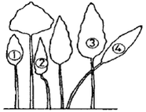

산림기능사 (2003-10-05 기출문제)
1과목: 조림 및 육림기술
1. 다음 중 개량종자를 공급할 목적으로 인위적으로 조성된 것은?
- 채종림
- 잠정 채종림
- 채종원
- 채수원
(정답률: 75%)

2. 택벌림형을 바르게 나타낸 것은?
- 어린나무가 대부분의 면적을 점유한다.
- 치수와 장령목의 두 계층이 같은 면적을 점유한다.
- 1년생부터 윤벌기에 달한 나무가 같은 면적을 점유 한다.
- 장령목과 노령목이 보다 많은 면적을 점유한다.
(정답률: 56%)
3. 주로 연료를 채취하기 위하여 벌기를 짧게 하는 작업방식은 어디에 속하는가?
- 모수작업
- 택벌작업
- 왜림작업(저림작업)
- 산벌작업(우산베기작업)
(정답률: 95%)
4. 종자가 비교적 가벼워서 잘 날아갈 수 있는 수종에만 적용될 수 있는 작업은?
- 개벌 작업
- 중림 작업
- 택벌 작업
- 모수 작업
(정답률: 86%)
5. 지력이 좋고 수분이 많아 잡초가 무성하고 기후가 온난한 임지의 6년생 소나무 조림지에 적합한 밑깎기는?
- 전면 깎기
- 줄 깎기
- 둘레 깎기
- 점 깎기
(정답률: 79%)
6. 다음은 간벌의 종류에 따라 그루수율과 재적률을 나타낸 것이다. 이중 옳게 짝지어 진 것은? (단, 순서는 간벌의 종류, 그루수율(%), 재적률(%))
- A종, 10∼15, 2∼6
- B종, 20∼35, 12∼25
- C종, 30∼40, 45∼60
- D종, 25∼35, 25∼30
(정답률: 52%)
7. 비료목으로 적합하지 않는 수종은?
- 오리나무류
- 자귀나무
- 소나무
- 보리수나무
(정답률: 91%)
8. 묘포지에 대한 설명 중 틀린 것은?
- 일반적으로 양토 또는 사질양토가 좋다.
- 관리에 편하고 조림지에 가까운 곳이 좋다.
- 토양의 이화학적 성질 보다는 비옥도가 좋아야 한다.
- 관수와 배수가 양호한 곳이 좋다.
(정답률: 88%)
9. 다음 중 가지치기 방법으로 옳은 것은?
- 가지치기는 수종 및 경영목적에 따라 결정되어야 한다.
- 가지치기 시기는 생장 왕성한 여름에 실시한다.
- 가지치기 때 역지도 제거한다.
- 절단부가 융합이 늦어도 관계없으므로 굵은 가지는 제거해도 된다.
(정답률: 82%)
10. 소나무 종자의 1m2 당 파종량(부피)으로 가장 적당한 것은?
- 0.01L
- 0.02L
- 0.03L
- 0.⑤L
(정답률: 56%)
11. 발아율 90%, 고사율 20%, 순량율 80% 일 때 종자의 효율은?
- 14. 4%
- 16%
- 44%
- 72%
(정답률: 94%)
12. 다음 그림은 수관급을 나타낸 숲의 단면도이다. 3급목은?

- ①
- ②
- ③
- ④
(정답률: 64%)
13. 종자 저장 시 정선 후 곧바로 노천 매장해야 하는 수종으로 짝지은 것은?
- 층층나무, 전나무
- 삼나무, 편백
- 소나무, 해송
- 느티나무, 잣나무
(정답률: 59%)
14. 종자의 저장방법 중 밀봉저장(냉건저장)할 종자의 함수율로 알맞은 것은?
- 5~7%
- 7~10%
- 10~15%
- 15~20%
(정답률: 64%)
15. 묘목의 가식에 관한 내용을 가장 바르게 설명한 것은?
- 가식장소는 배수가 잘 되는 건조한 곳을 선정한다.
- 가식은 대부분 이랑을 파서 비스듬히 한 후 흙으로 묘목 전부를 덮고 단단히 밟아준다.
- 장기간 가식 시 다발을 풀어 가식하고 단기간 가식 시는 다발째로 가식한다.
- 묘목의 끝은 가을에는 북쪽, 봄에는 남쪽으로 향하도록 묻는다.
(정답률: 80%)
16. 파종상에서 1년, 두 번 이식하여 각각 1년씩을 보낸 3년생 묘목의 묘령은?
- 1-1-1
- 2-1
- 1-2
- 3-0
(정답률: 94%)
17. 나무를 굽게 하고 형질생장을 저하시키며, 심한 경우 부러뜨리는 기후 인자는?
- 수분
- 바람
- 광선
- 경사
(정답률: 95%)
18. 대면적 개벌 천연하종갱신의 장점이 아닌 것은?
- 양수의 갱신에 적용될 수 있다.
- 작업실행이 용이하고 빠르게 될 수 있다.
- 동일규격의 목재생산으로 경제적으로 유리할 수 있다.
- 동령 일제림으로 병해충 및 위해에 강하다.
(정답률: 60%)
19. 모수의 조건으로 적합하지 않은 것은?
- 유전적 형질이 좋아야 한다.
- 풍도에 대하여 저항력이 있어야 한다.
- 종자는 많이 생산하지 않아도 된다.
- 우세목 중에서 고르도록 한다.
(정답률: 94%)
20. 다음 중 1년생 산출묘로써 단근작업을 해야 하는 수종은?
- 느티나무
- 상수리나무
- 삼나무
- 낙엽송
(정답률: 54%)
21. 묘목 식재 시 유의 사항이 아닌 것은?
- 구덩이 속에 지피물, 낙엽 등이 유입되지 않도록 한다.
- 뿌리나 수간 등이 굽지 않도록 한다.
- 비탈진 곳에서의 표토 부위는 경사지게 한다.
- 너무 깊거나 얕게 식재 되지 않도록 한다.
(정답률: 91%)
22. 소나무, 해송 암꽃의 꽃눈 분화 시기는 언제인가?
- 3월 하순부터 4월 상순
- 4월 하순부터 5월 상순
- 5월 하순부터 6월 상순
- 8월 하순부터 9월 상순
(정답률: 59%)
23. 발근촉진제로 쓰이는 식물성 호르몬제는?
- 지베렐린
- AMO-1618
- 나프탈렌아세트산(NAA)
- 수산화나트륨
(정답률: 70%)
24. 묘목을 묶어 가식할 때 묶음별 그루수의 단위로 틀린 것은?
- 10
- 20
- 25
- 100
(정답률: 59%)
25. 토양의 단면도를 보았을 때 위쪽에서 아래쪽으로의 순서가 맞게 배열된 것은?
- 표토층- 모재층- 심토층- 유기물층
- 표토층- 유기물층- 심토층- 모재층
- 유기물층- 표토층- 심토층- 모재층
- 유기물층- 표토층- 모재층- 심토층
(정답률: 78%)
2과목: 산림보호
26. 연해(煙害)에 저항성이 가장 강한 나무는?
- 소나무
- 밤나무
- 노간주나무
- 전나무
(정답률: 52%)
27. 토양 중에 서식하는 균류에 의하여 전염되는 병은?
- 소나무 잎녹병(葉銹病)
- 아카시아 탄저병(炭疽病)
- 오동나무빗자루병(天拘巢病)
- 모잘록병(苗立枯病)
(정답률: 77%)
28. 참나무와 관계있는 병은?
- 소나무 혹병
- 소나무 잎녹병
- 잣나무 털녹병
- 향나무 녹병
(정답률: 56%)
29. 나비목에 속하는 곤충은?
- 밤나방
- 나무좀류
- 깍지벌레
- 나무이
(정답률: 88%)
30. 밤 열매에 피해를 주며 1년에 2회 발생하고 성충 최성기에 침투성 살충제로 방제하면 효과가 큰 해충은?
- 복숭아 명나방
- 밤나무순혹벌
- 밤나방
- 밤바구미
(정답률: 76%)
31. 진딧물을 포식하는 천적 곤충으로 가장 유명한 것은?
- 됫박벌레
- 개미
- 거미
- 응애
(정답률: 62%)
32. 기생식물에 의한 피해인 새삼에 대한 설명이다. 옳지 않는 것은?
- 1년생초로서 철사 같고 황적색이다.
- 잎은 비닐잎처럼 생기고 삼각형이며 길이가 2㎜ 내외이다.
- 꽃은 2~3월에 피며 희고 덩어리처럼 된다.
- 기주식물의 조직 속에 흡근을 박고 양분을 섭취한다.
(정답률: 70%)
33. 소나무와 해송의 새잎에 벌레혹(충영)을 만들어 피해를 주는 해충은?
- 소나무좀
- 솔잎혹파리
- 솔나방
- 소나무재선충
(정답률: 78%)
34. "송충"이라고도 불리며 5령유충으로 월동을 하여 이듬해 4월경부터 잎을 갉아먹는 해충은?
- 솔잎혹파리
- 솔껍질깍지벌레
- 솔나방
- 소나무좀
(정답률: 80%)
35. 다음 수목의 병 중 기주교대를 하는 병이 아닌 것은?
- 잣나무 털녹병
- 소나무혹병
- 벚나무빗자루병
- 소나무 잎녹병
(정답률: 72%)
36. 수병의 예방법으로 임업적 방제법과 거리가 가장 먼 것은?
- 그 지역에 알맞은 조림 수종의 선택
- 위생법에 의한 철저한 식물 검역 제도 도입
- 단순림 보다는 침엽수와 활엽수의 혼효림 조성
- 육림작업을 적기에 실시하고, 벌채를 벌기령에 맞추어 실시함
(정답률: 78%)
37. 소나무좀의 월동 장소와 형태는 다음 중 어떤 것인가?
- 알로 목질부에서 월동
- 유충으로 땅 속에서 월동
- 번데기로 소나무 껍질 사이에서 월동
- 엄지벌레로 지면 근처 수피 속에서 월동
(정답률: 44%)
38. 동물에 의한 수목피해 중 가장 피해가 큰 것은?
- 토끼, 들쥐 등 소형동물
- 사슴, 노루 등 대형 초식동물
- 산까치, 박새 등 조류
- 곰, 호랑이 등 맹수류
(정답률: 89%)
39. 살비제의 적용 해충은?
- 깍지벌레류
- 응애류
- 방패벌레류
- 솔잎혹파리의 유충
(정답률: 83%)
40. 농약 사용 시의 일반적인 주의사항과 거리가 먼 것은?
- 사용하는 물은 깨끗한 우물물이나 수돗물을 사용한다.
- 유제(乳劑)와 수화제(水和劑)는 가능한 혼합하여 사용한다.
- 바람을 등지고 뿌린다.
- 한사람이 2시간 이상 뿌리지 않도록 한다.
(정답률: 76%)
3과목: 임업기계일반
41. 4행정 내연기관에 있어 크랭크축이 몇 회 회전시마다 1회의 폭발 행정이 일어나는가?
- 1회
- 2회
- 3회
- 4회
(정답률: 82%)
42. 체인톱의 안내판과 체인의 수명을 나타낸 것 중 가장 옳은 것은?
- 150시간과 300시간
- 300시간과 450시간
- 450시간과 150시간
- 500시간과 300시간
(정답률: 83%)
43. 공기청정기(air-filter)를 일일정비 하지 않고 계속 사용 시 어떤 현상이 나타나는가?
- 연료소비량이 적어진다.
- 엔진의 힘이 약해진다.
- 캬브레다가 마모된다.
- 기계전체의 능률이 높아진다.
(정답률: 82%)
44. 분해된 체인톱 체인(chain)및 안내판(guide-bar)을 다시 결합할 때 제일 먼저 해야 될 사항은?
- 체인과 안내판을 스프라켓트에 건다.
- 체인의 조정나사를 돌려 조정한다.
- 안내판 덮개조임나사를 손으로 조여 준다.
- 체인장력조정나사를 시계 반대 방향으로 돌린다.
(정답률: 73%)
45. 작업장에서 작업자 배치 시 가장 먼저 고려해야 할 사항은?
- 작업능률 극대화
- 안전성 최대화
- 감독의 난이도
- 작업량 배정
(정답률: 89%)
46. 작업도구와 능률에 관한 기술로 옳지 않은 것은?
- 자루의 길이는 적당히 길수록 힘이 세어진다.
- 도구의 날의 끝 각도가 클수록 나무가 잘 빠개진다.
- 도구는 가벼울수록, 내려치는 속도가 늦을수록 힘이 세어진다.
- 도구의 날은 날카로운 것이 땅을 잘 파거나 잘 자를 수 있다.
(정답률: 91%)
47. 체인톱의 동력 연결은 어떠한 힘에 의하여 스프라켓트에 전달되는가?
- 원심력과 마찰력
- 무중력
- 중력, 마찰력
- 구심력
(정답률: 87%)
48. 체인톱 안전장치가 아닌 것은?
- 톱날 안내판
- 체인잡이 볼트
- 스로틀레버 차단판
- 후방 보호판
(정답률: 62%)
49. 체인톱의 기화기에는 몇 개의 연료분사구가 있는가?
- 2개
- 3개
- 4개
- 5개
(정답률: 50%)
50. 도구의 날을 가는 요령을 설명하였다. 틀린 것은?
- 도끼의 날은 침엽수용이 활엽수용보다 더 둔하게 연마하여야 한다.
- 도끼의 날은 활엽수용이 침엽수용보다 더 둔하게 갈아준다.
- 톱의 날은 침엽수용보다 활엽수용을 더 둔하게 갈아준다.
- 톱니의 젖힘은 침엽수용이 활엽수용보다 더 넓게 젖혀준다.
(정답률: 58%)
51. 조림작업 시 조림목을 심을 구덩이를 파는 기계는?
- 예불기
- 지타기
- 식혈기
- 하예기
(정답률: 89%)
52. 임목수확작업 기계화의 특징 중 틀린 것은?
- 작업원의 숙련도가 작업능률에 미치는 영향이 크다.
- 자연조건의 영향을 많이 받는다.
- 재료인 입목의 규격화가 불가능하므로 재료에 맞는 기계를 선택해야 한다.
- 작업의 소규모화에 따라 다공정 기계장비보다 전문 기계장비가 경제적이다.
(정답률: 80%)
53. 체인톱에 보통 휘발유가 아닌 불법제조 휘발유 사용 시 예상되는 문제점은?
- 기화기막, 또는 연료호스가 녹고 연료통 내막을 부식시킨다.
- 연료통내막이 강화된다.
- 연료호스가 경화되어 수명이 길어진다.
- 오일막이 생긴다.
(정답률: 89%)
54. 윤활유의 작용으로 틀리는 것은?
- 청소작용
- 냉각작용
- 윤활작용
- 오염작용
(정답률: 72%)
55. 활엽수 유령림의 무육작업에 가장 적합한 도구는?
- 재래식 낫
- 스위스 보육 낫
- 소형 전정가위
- 소형손톱
(정답률: 65%)
56. 얼어 있는 나무의 벌목 시 유의할 사항으로 올바른 것은?
- 얼어 있는 가지는 다른 나무에 걸리는 확률이 적다.
- 추구는 정확하고 작게 만들어 주어야한다.
- 쐐기를 적극 사용하는 것이 좋다.
- 나무쐐기는 얇게 만들고 모래를 뿌려 사용한다.
(정답률: 56%)
57. 트랙터 부착형 윈치(파미윈치) 작업방법 중 설명이 올바른 것은?
- 작업로에 진입하여 작업할 수 없음
- 견인작업 시 와이어로프 외각은 위험한 지역임
- 지면끌기 집재 작업 방식임
- 견인거리가 100m∼200m임
(정답률: 78%)
58. 체인톱(Chainsaw)의 구조 중 체인톱날에 대한 설명이 올바른 것은?
- 평균사용 수명시간이 약 300시간이다.
- 규격은 피치(Pitch)로 표시하며 스프라킷의 피치와 일치하여야 한다.
- 1피치는 리벳 4개 길이의 평균 길이이다.
- 톱날 구성은 우측톱니, 전동쇠, 이음쇠 좌측톱니로 이루어져 있다.
(정답률: 58%)
59. 전목 집재작업 시 작업공정에 알맞는 기계장비로 연결된 것은?
- 벌목작업 - 프로세서
- 전목집재작업 - 타워야더
- 조재작업 - 포워더
- 운재작업 - 리모콘 윈치
(정답률: 71%)
60. 체인톱 기화기의 벤트리관으로 유입된 연료량은 다음 중 무엇에 의해 조정될 수 있는가?
- 저속조정나사 노즐
- 지뢰쇠와 연료유입 조정니들 밸브
- 고속조정나사와 공전조정나사
- 배출 밸브막과 펌프
(정답률: 80%)